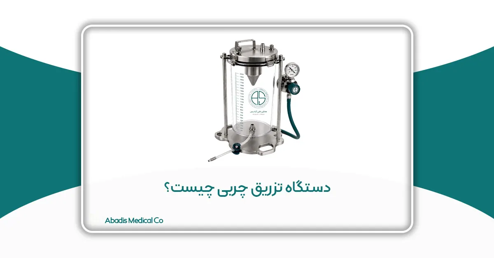
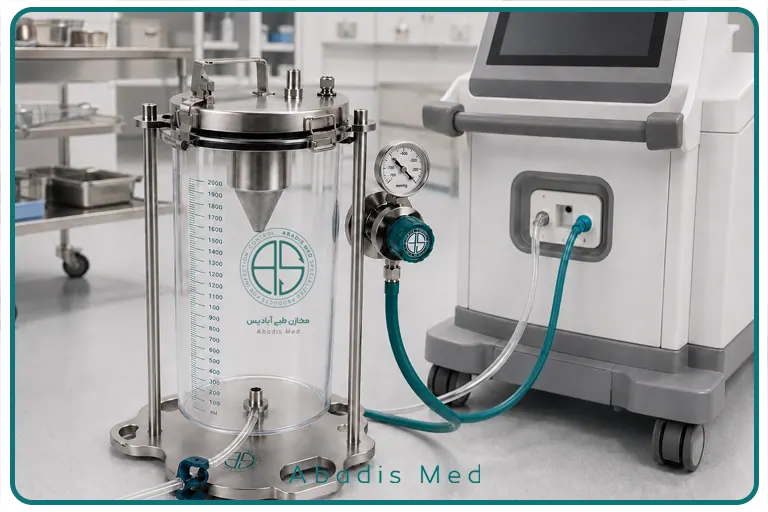

چکیده
دستگاه تزریق چربی عنوانی عمومی برای سامانهای است که چربی برداشتشده در جریان لیپوساکشن را جمعآوری کرده و پس از آمادهسازی، به کمک پمپ و از طریق یک مسیر کنترلشده به کانولای تزریق منتقل میکند. در بعضی سامانهها، مراحل برداشت و تزریق به یکدیگر متصلاند؛ به این معنا که چربی در حین لیپوساکشن وارد مخزن مخصوص میشود و پس از پایان مرحله برداشت، خروجی همان مخزن به بخش پمپ تزریق دستگاه لیپوساکشن متصل میشود. در نتیجه، انتقال چربی بدون جابهجاییهای مکرر میان ظروف و سرنگها و در همان جلسه جراحی انجام میگیرد.
دستگاه تزریق چربی بهتنهایی مسئول موفقیت پیوند نیست. نتیجه نهایی به کیفیت چربی برداشتشده، روش آمادهسازی، فشار و دبی انتقال، قطر شیلنگ و کانولا، نیروی برشی، نحوه توزیع گرافت، خونرسانی بافت گیرنده، شرایط بیمار و مهارت جراح وابسته است. بستهبودن مدار میتواند تماس غیرضروری نمونه با محیط و تعداد انتقالهای دستی را کاهش دهد؛ اما استریلیتی سامانه فقط زمانی قابل اتکا است که تمام اجزا استریل باشند، اتصالات بهصورت آسپتیک انجام شوند و روش تمیزکردن و استریلیزاسیون اجزای چندبارمصرف اعتبارسنجی شده باشد.
این مقاله ساختار، سازوکار، اجزا، مزایا، محدودیتها و الزامات ایمنی دستگاههای تزریق چربی مدار بسته را بررسی میکند. در پایان نیز طرح مفهومی دستگاه تزریق چربی آبادیس، بهعنوان یک محصول در حال تحقیق و توسعه، بهصورت کوتاه معرفی میشود.
واژگان کلیدی: دستگاه تزریق چربی، پیوند چربی اتولوگ، لیپوفیلینگ، لیپوساکشن، مدار بسته، پمپ تزریق، گرافت چربی، کانولا.
1.مقدمه
پیوند چربی اتولوگ روشی است که در آن بافت چربی از یک ناحیه بدن بیمار برداشت و پس از آمادهسازی به ناحیه دیگری از بدن همان فرد منتقل میشود. این روش در جراحیهای زیبایی، ترمیمی و بازسازی برای اصلاح کمبود حجم، بهبود کانتور، بازسازی پستان، جوانسازی صورت، اصلاح اسکار و درمان بعضی نقایص بافت نرم کاربرد دارد.
چربی پیوندی برخلاف یک فیلر مایع ساده، بافت زنده و ناهمگنی است که از آدیپوسیتها، ماتریکس خارجسلولی، سلولهای استرومال، عروق کوچک، رشتههای بافت همبند و مقداری مایع همراه تشکیل شده است. به همین دلیل، کیفیت گرافت میتواند تحت تأثیر فشار، کشش، نیروی برشی، تماس با محیط، مدت نگهداری، روش پردازش و وضعیت خونرسانی بافت گیرنده قرار گیرد [۱،۲].
فرایند پیوند چربی معمولاً از مراحل زیر تشکیل میشود:
- انتخاب ناحیه اهداکننده؛
- تزریق محلول تامسنت؛
- برداشت چربی با کانولای لیپوساکشن؛
- جمعآوری لیپوآسپیرات؛
- جداسازی چربی از خون، مایع تامسنت و روغن آزاد؛
- انتقال چربی آمادهشده به وسیله تزریق؛
- تزریق چربی در ناحیه گیرنده؛
- بازعروقیشدن و تثبیت بخشی از گرافت.
در روشهای سنتی، چربی ممکن است در سرنگها یا ظروف جداگانه جمعآوری شود و پس از تهنشینی، سانتریفیوژ، شستوشو یا فیلتراسیون، دوباره به سرنگهای تزریق منتقل شود. این روش در حجمهای محدود قابلمدیریت است؛ اما در انتقال حجمهای بیشتر میتواند زمانبر باشد و به اتصالات و جابهجاییهای متعدد نیاز داشته باشد.
سامانههای مدار بسته جمعآوری و تزریق چربی با هدف یکپارچهکردن این گردشکار توسعه یافتهاند.
2.دستگاه تزریق چربی چیست؟
دستگاه تزریق چربی مدار بسته سامانهای است که چربی برداشتشده در جریان لیپوساکشن را در یک مخزن مخصوص جمعآوری میکند و پس از آمادهسازی، از طریق پمپ تزریق به کانولای انتقال میرساند.
در این ساختار، دستگاه تزریق چربی لزوماً دارای یک پمپ مستقل نیست. سامانه ممکن است به بخش پمپ تزریق دستگاه لیپوساکشن متصل شود و از نیروی آن برای انتقال چربی استفاده کند. بنابراین محصول از نظر فنی یک ماژول یا مجموعه جانبی است که قابلیتهای دستگاه لیپوساکشن را از برداشت چربی به انتقال و تزریق مجدد آن گسترش میدهد.
یک سامانه کامل معمولاً از اجزای زیر تشکیل میشود:
- مخزن مدرج جمعآوری چربی؛
- درپوش آببندیشده؛
- ورودی متصل به مسیر لیپوساکشن؛
- مجموعه کنترل فشار مرحله جمعآوری؛
- اتصالات و شیرهای ورودی و خروجی؛
- مسیر احتمالی تخلیه مایعات؛
- شیلنگ انتقال چربی؛
- رابط اتصال به پمپ تزریق؛
- هندپیس یا کانولای تزریق؛
- و پایه تثبیتکننده مخزن.
در مرحله برداشت، فشار منفی دستگاه لیپوساکشن چربی را به مخزن هدایت میکند. پس از پایان لیپوساکشن و آمادهشدن چربی، مسیر برداشت متوقف میشود و خروجی مخزن به بخش پمپ تزریق متصل میگردد. پمپ با ایجاد فشار مثبت کنترلشده، چربی را از مخزن به کانولا منتقل میکند.
این گردشکار باید به شکلی طراحی شود که مسیر جمعآوری و مسیر تزریق از نظر عملکرد و کنترل فشار با یکدیگر اشتباه نشوند.
3.تفاوت دستگاه تزریق چربی با مخزن لیپوساکشن
مخزن معمولی لیپوساکشن فقط برای جمعآوری مواد برداشتشده طراحی میشود. محتویات آن ممکن است ترکیبی از چربی، محلول تامسنت، خون، روغن آزاد و بقایای بافتی باشد. این نوع مخزن الزاماً برای بازگرداندن چربی به بدن مناسب نیست.
در مقابل، سامانه تزریق چربی باید علاوه بر جمعآوری، شرایط لازم برای نگهداری موقت، جداسازی، تخلیه مایعات اضافی و انتقال کنترلشده چربی را فراهم کند.
| ویژگی | مخزن معمولی لیپوساکشن | سامانه تزریق چربی مدار بسته |
|---|---|---|
| هدف اصلی | جمعآوری مواد حاصل از لیپوساکشن | جمعآوری و انتقال چربی قابلپیوند |
| مرحله عملکرد | برداشت | برداشت و تزریق |
| فشار مورد استفاده | فشار منفی | فشار منفی در برداشت و فشار مثبت در تزریق |
| مسیر خروجی چربی | معمولاً برای تخلیه محتویات | متصلشونده به پمپ و کانولای تزریق |
| کنترل آلودگی | متناسب با جمعآوری مواد | نیازمند حفظ استریلیتی مسیر بازگشت به بدن |
| الزامات مواد | مقاومت مکانیکی و سازگاری عمومی | زیستسازگاری و قابلیت استفاده در مسیر گرافت |
بنابراین وجود یک مخزن شفاف و گیج فشار بهتنهایی برای تعریف محصول بهعنوان دستگاه تزریق چربی کافی نیست. قابلیت تزریق زمانی شکل میگیرد که مخزن دارای خروجی مناسب، مدار انتقال معتبر، اتصال سازگار با پمپ و مکانیزم کنترل فشار و جریان باشد.
۴. اجزای اصلی سامانه
۴–۱. مخزن مدرج
مخزن محل جمعآوری چربی برداشتشده است. مدرجبودن آن به تیم جراحی امکان میدهد حجم تقریبی محتویات را مشاهده کند. بااینحال، حجم نشاندادهشده در مخزن لزوماً معادل حجم چربی خالص نیست؛ زیرا لیپوآسپیرات ممکن است حاوی مایع تامسنت، خون و روغن آزاد باشد.
مخزن باید در برابر فشار منفی مرحله برداشت و فشار یا تغییرات مکانیکی مرحله انتقال مقاومت کند. ماده سازنده نیز باید با چربی و محلولهای مورد استفاده سازگار باشد و در صورت چندبارمصرفبودن، روش بازفرآوری آن اعتبارسنجی شده باشد.
۴–۲. درپوش و آببندی
درپوش مخزن باید از نشتی هوا و خروج ناخواسته محتویات جلوگیری کند. هرگونه نشتی میتواند فشار مکش را کاهش دهد، کنترل جریان را مختل کند یا یکپارچگی مدار را از بین ببرد.
بستها، واشرها و اورینگها باید برای فشار کاری موردنظر طراحی شوند. دوام آنها پس از چرخههای تمیزکردن و استریلیزاسیون نیز باید بررسی شود.
۴–۳. مجموعه گیج و تنظیم فشار
گیج نصبشده در مسیر برداشت معمولاً فشار منفی یا خلأ را نشان میدهد. مقدار خلأ میتواند بر سرعت برداشت و احتمال آسیب مکانیکی به بافت اثر بگذارد.
گیج فشار مرحله برداشت نباید با سامانه کنترل فشار تزریق یکسان فرض شود. در مرحله تزریق، فشار مثبت و رفتار دستگاه هنگام انسداد کانولا اهمیت دارد. بنابراین یک سامانه کامل باید برای هر دو جهت جریان، محدوده فشار و سازوکار کنترل مشخص داشته باشد.
۴–۴. فیلتر یا جداکننده داخلی
برخی سامانهها از توری، صافی یا ساختار جداکننده برای کاهش ورود رشتههای درشت بافتی به مسیر انتقال استفاده میکنند. این جزء ممکن است از انسداد شیلنگ و کانولا جلوگیری کند؛ اما اندازه منافذ آن نباید بهگونهای باشد که ساختار قابلپیوند چربی را بهطور نامطلوب تغییر دهد.
وجود فیلتر بهتنهایی به معنای آمادهشدن کامل چربی نیست. خون، مایع تامسنت و روغن آزاد ممکن است همچنان به جداسازی یا تخلیه نیاز داشته باشند.
۴–۵. خروجی پایین مخزن
قرارگرفتن خروجی در قسمت پایین میتواند تخلیه مایعات یا انتقال محتویات را تسهیل کند. طراحی شیر و رابط خروجی باید از تجمع چربی در شکافها، نشت و ورود هوا جلوگیری کند.
اگر از یک خروجی برای تخلیه مایع و انتقال چربی استفاده شود، ترتیب مراحل و وضعیت شیرها باید در دستورالعمل کاربری بهروشنی تعریف شود.
۴–۶. شیلنگ انتقال
شیلنگ، چربی آمادهشده را از مخزن به پمپ یا کانولا منتقل میکند. قطر داخلی، طول و انعطافپذیری شیلنگ بر افت فشار و فضای مرده اثر دارند.
کاهش قطر داخلی ممکن است فشار لازم برای عبور چربی را افزایش دهد. طول زیاد نیز میتواند افت فشار و مقدار چربی باقیمانده در مدار را بیشتر کند. طراحی مسیر باید میان سه نیاز تعادل برقرار کند:
- عبور مناسب گرافت؛
- کنترل جریان؛
- و امکان کار راحت در محیط جراحی.
۴–۷. رابط پمپ تزریق
رابط باید اتصال مطمئن میان سامانه و بخش پمپ تزریق دستگاه لیپوساکشن را ایجاد کند. سازگاری مکانیکی بهتنهایی کافی نیست؛ محدوده فشار، دبی و روش کنترل پمپ نیز باید با مدار انتقال هماهنگ باشد.
استفاده از رابطهای غیرتأییدشده ممکن است موجب نشتی، جداشدن شیلنگ، افزایش فشار یا اختلال در کالیبراسیون جریان شود.
۴–۸. کانولای تزریق
کانولا آخرین بخش مسیر انتقال است. قطر، طول، شکل نوک و تعداد پورتهای خروجی آن بر فشار و نحوه توزیع چربی اثر میگذارند.
مطالعات نشان دادهاند اندازه کانولای برداشت یا تزریق ممکن است بر ساختار و زیستپذیری گرافت اثر بگذارد [۳]. بااینحال، انتخاب کانولا باید متناسب با ناحیه درمان، نوع گرافت و حجم موردنیاز انجام شود.

۵. مراحل عملکرد دستگاه
مرحله اول: برداشت چربی
لیپوساکشن با استفاده از کانولا و فشار منفی انجام میشود. چربی برداشتشده از طریق شیلنگ وارد مخزن مخصوص میشود.
فشار برداشت باید به اندازهای باشد که جداسازی و انتقال چربی را امکانپذیر کند، اما فشار بیشتر لزوماً به معنای گرافت بهتر نیست. شدت خلأ، اندازه کانولا و روش حرکت آن میتوانند بر بافت برداشتشده اثر بگذارند [۱،۳].
مرحله دوم: جمعآوری در مدار بسته
لیپوآسپیرات بدون انتقال به ظروف متعدد در مخزن جمعآوری میشود. کاهش جابهجایی دستی میتواند احتمال تماس غیرضروری نمونه با محیط و اتلاف چربی را کمتر کند.
بااینحال، بستهبودن مسیر فقط در صورتی حفظ میشود که تمام اتصالات بسته بمانند، مونتاژ بهصورت آسپتیک انجام شود و هیچکدام از اجزا دچار نشتی نباشند.
مرحله سوم: جداسازی و آمادهسازی
چربی برداشتشده معمولاً باید از بخش قابلتوجهی از خون، مایع تامسنت و روغن آزاد جدا شود. این فرایند ممکن است با تهنشینی، تخلیه مایع، شستوشو، فیلتراسیون یا ترکیبی از این روشها انجام شود.
مرورهای علمی هنوز یک روش پردازش واحد را برای تمام کاربردها برتر نمیدانند. سانتریفیوژ، شستوشو، تهنشینی و فیلتراسیون هرکدام مزایا و محدودیتهایی دارند [۴–۶].
بنابراین باید مشخص شود دستگاه دقیقاً کدام روش را اجرا میکند و چه بخشهایی از لیپوآسپیرات را حذف میکند. عبارت عمومی «تصفیه چربی» بدون توضیح سازوکار علمی کافی نیست.
مرحله چهارم: تغییر از حالت برداشت به تزریق
پس از پایان لیپوساکشن، مسیر مکش متوقف میشود. سپس خروجی مخزن براساس دستورالعمل دستگاه به بخش پمپ تزریق متصل میشود.
طراحی باید مانع اعمال همزمان فشار منفی و مثبت به مدار شود. وضعیت شیرها و اتصالات باید واضح باشد تا احتمال خطای کاربر کاهش یابد.
مرحله پنجم: انتقال چربی
پمپ، چربی آمادهشده را از مخزن وارد شیلنگ انتقال میکند. جریان باید به اندازهای باشد که انتقال بدون وقفه انجام شود، اما موجب افزایش کنترلنشده فشار یا نیروی برشی نشود.
دبی مناسب برای هر ناحیه متفاوت است. انتقال حجم زیاد به یک ناحیه وسیع با تزریق چربی در صورت یا اطراف چشم یکسان نیست.
مرحله ششم: تزریق در بستر گیرنده
جراح کانولا را در صفحه آناتومیک موردنظر هدایت میکند و معمولاً هنگام عقبکشیدن آن، مقادیر کوچک چربی را در تونلهای متعدد قرار میدهد.
هدف این است که سطح تماس گرافت با بافت دارای خونرسانی افزایش یابد. تزریق یک توده بزرگ چربی میتواند موجب کمبود اکسیژن، نکروز چربی، تشکیل کیست روغنی یا کلسیفیکاسیون شود [۱،۲].
۶. اهمیت فشار، دبی و نیروی برشی
چربی یک مایع یکنواخت نیست و رفتار آن با آب یا سرم تفاوت دارد. این بافت شامل لوبولهای چربی، رشتههای بافتی و مایع است و هنگام عبور از مسیر باریک، مقاومت متغیری ایجاد میکند.
دبی
دبی مقدار چربی عبوری در واحد زمان است. افزایش دبی میتواند زمان انتقال را کاهش دهد، اما ممکن است سرعت و نیروی برشی را نیز بیشتر کند.
عدد دبی دستگاه باید براساس آزمون با چربی یا مدل معتبر آن تعیین شده باشد. دبی اندازهگیریشده با آب نمیتواند رفتار گرافت را بهطور کامل پیشبینی کند.
فشار
اگر کانولا یا شیلنگ دچار انسداد شود، فشار پشت محل انسداد افزایش مییابد. رفع ناگهانی انسداد ممکن است موجب خروج جهشی چربی شود. به همین دلیل، محدودکننده فشار، هشدار انسداد و قابلیت توقف فوری اهمیت دارند.
نیروی برشی
نیروی برشی هنگام حرکت چربی در مجاورت دیواره شیلنگ، شیر و کانولا ایجاد میشود. کاهش قطر داخلی یا افزایش سرعت جریان میتواند مقدار این نیرو را بیشتر کند.
مطالعات آزمایشگاهی نشان دادهاند تکنیک تزریق میتواند بر زیستپذیری و احتباس حجمی گرافت اثر بگذارد [۷]. بااینحال، نمیتوان نتایج یک نوع تزریقکننده را بدون مطالعه مستقیم به تمام دستگاهها تعمیم داد.
فضای مرده
فضای مرده بخشی از شیلنگ و اتصالات است که پس از پایان کار مقداری چربی در آن باقی میماند. فضای مرده زیاد موجب هدررفتن گرافت میشود. حجم باقیمانده باید در آزمونهای فنی دستگاه اندازهگیری شود.
۷. مفهوم مدار بسته و استریلیتی
مدار بسته به سامانهای گفته میشود که چربی در طول جمعآوری، آمادهسازی و انتقال، بدون تماس مستقیم و غیرضروری با محیط جابهجا شود.
مزیت نظری چنین سامانهای عبارت است از:
- کاهش انتقال میان ظروف و سرنگها؛
- کاهش دفعات بازشدن مسیر؛
- کاهش تماس نمونه با محیط؛
- کاهش احتمال ریزش یا اتلاف چربی؛
- و تسهیل گردشکار.
بااینحال، «مدار بسته» و «مدار استریل» دو مفهوم یکسان نیستند. مدار ممکن است بسته باشد، اما اگر قطعات آن بهدرستی استریل نشده یا اتصالها غیراسپتیک باشند، استریلیتی تضمین نمیشود.
برای استفاده از عبارت «استریل» باید شرایط زیر برقرار باشند:
- تمام اجزای در تماس با گرافت استریل باشند؛
- روش استریلیزاسیون اعتبارسنجی شده باشد؛
- بستهبندی استریل تا زمان مصرف سالم بماند؛
- مونتاژ در شرایط آسپتیک انجام شود؛
- اتصالها نشتی نداشته باشند؛
- و مسیر در طول عمل باز نشود.
سامانه بسته میتواند فرصت آلودگی را کاهش دهد؛ اما اثبات کاهش عفونت به مطالعات بالینی مقایسهای نیاز دارد.
۸. کاربردهای بالینی
دستگاه تزریق چربی ممکن است در کاربردهای مختلفی استفاده شود، اما تنظیمات و تکنیک موردنیاز در تمام نواحی یکسان نیست.
صورت
در صورت، حجمهای کوچک و کنترل دقیق اهمیت دارند. به دلیل وجود عروق حساس، موقعیت کانولا و آناتومی ناحیه از اهمیت بسیار بالایی برخوردار است.
پستان
پیوند چربی ممکن است برای اصلاح کانتور، بازسازی جزئی، بهبود بعضی نقایص یا افزایش حجم استفاده شود. انتخاب بیمار، سابقه بیماریهای پستان، تصویربرداری و پیگیری باید در پروتکل درمانی در نظر گرفته شوند [۸].
اسکار و نقایص بافت نرم
در این کاربردها معمولاً توزیع یکنواخت و کنترل دقیق حجم از سرعت انتقال مهمتر است.
ناحیه گلوتئال
تزریق چربی گلوتئال یکی از پرخطرترین کاربردهاست. ورود چربی به عروق بزرگ میتواند باعث آمبولی چربی و مرگ شود.
بیانیه مشترک انجمنهای جراحی پلاستیک از تزریق در فضای زیرجلدی بالای فاسیای عضله و استفاده از سونوگرافی بلادرنگ برای مشاهده نوک کانولا حمایت میکند [۹].
هیچ دستگاهی، حتی اگر دارای کنترل دقیق جریان باشد، نمیتواند جایگزین مشاهده محل کانولا، شناخت آناتومی و تکنیک ایمن جراح شود.
۹. مزایای بالقوه دستگاه
مزایای احتمالی یک سامانه مدار بسته عبارتاند از:
- یکپارچهشدن مراحل برداشت و تزریق؛
- امکان تزریق در همان جلسه جراحی؛
- کاهش انتقالهای دستی میان ظروف و سرنگها؛
- کاهش اتلاف چربی هنگام جابهجایی؛
- کاهش تماس غیرضروری نمونه با محیط؛
- امکان استفاده از حجم بیشتر بدون تعویض مکرر سرنگ؛
- کنترلپذیرترشدن جریان؛
- و کاهش فشار فیزیکی واردشده به دست جراح.
این موارد مزایای نظری یا مهندسیاند. برای اثبات مزیت بالینی باید دستگاه نهایی در مقایسه با روش مرجع بررسی شود.
برای مثال، اگر ادعا شود دستگاه موجب افزایش بقای چربی میشود، باید زیستپذیری گرافت و احتباس حجمی آن در یک مطالعه معتبر اندازهگیری شود. اگر ادعای کاهش آلودگی مطرح باشد، بار میکروبی و عفونت باید در شرایط مقایسهای بررسی شوند.
۱۰. محدودیتها و خطرات
محدودیتها و خطرات احتمالی سامانه عبارتاند از:
- افزایش فشار در اثر انسداد؛
- خروج ناگهانی چربی پس از رفع انسداد؛
- آسیب مکانیکی به گرافت؛
- انتقال چربی آمادهنشده؛
- خطا در وضعیت شیرها؛
- باقیماندن چربی در مدار؛
- نشتی مخزن یا شیلنگ؛
- آلودگی اتصالات؛
- تمیزنشدن کامل قطعات چندبارمصرف؛
- خرابی گیج یا پمپ؛
- و اعتماد بیشازحد به عملکرد خودکار.
وجود پمپ ممکن است کار را آسانتر کند، اما کنترل حرکت کانولا و محل تزریق همچنان بر عهده پزشک است.
۱۱. تمیزکردن، استریلیزاسیون و بازفرآوری
قطعاتی که با چربی، خون یا بافت تماس دارند باید استریل باشند. اگر قسمتی یکبارمصرف طراحی شده باشد، استفاده مجدد از آن بدون اعتبارسنجی مجاز نیست.
در اجزای چندبارمصرف، تمیزکردن پیش از استریلیزاسیون ضروری است. باقیماندن چربی و پروتئین میتواند اثربخشی فرایند استریلیزاسیون را کاهش دهد.
براساس راهنمای FDA، سازنده باید روش بازفرآوری را بهطور علمی اعتبارسنجی کند و دستورالعمل روشن و قابلاجرایی ارائه دهد [۱۰،۱۱].
این دستورالعمل باید شامل موارد زیر باشد:
- نحوه جداسازی قطعات؛
- روش تخلیه باقیمانده چربی؛
- نوع و غلظت شوینده؛
- روش تمیزکردن مجاری داخلی؛
- آبکشی و خشککردن؛
- روش بستهبندی؛
- نوع استریلیزاسیون؛
- دما و مدت چرخه؛
- حداکثر تعداد دفعات استفاده؛
- و معیار کنارگذاری قطعات.
صرف استفاده از فولاد زنگنزن یا درج عبارت «قابل اتوکلاو» برای اثبات امکان بازفرآوری کافی نیست. کل مجموعه باید پس از تعداد چرخههای تعیینشده از نظر آببندی، تغییر شکل، خوردگی و عملکرد بررسی شود.
۱۲. آزمونهای موردنیاز پیش از عرضه
یک دستگاه تزریق چربی پیش از ورود به کاربرد بالینی باید مراحل ارزیابی مشخصی را طی کند.
آزمونهای مکانیکی
- مقاومت مخزن در برابر فشار منفی؛
- مقاومت اتصالات در برابر جداشدن؛
- بررسی نشتی؛
- دوام بستها و واشرها؛
- پایداری پایه؛
- و مقاومت شیلنگها.
آزمونهای عملکردی
- صحت دبی؛
- تکرارپذیری جریان؛
- حداکثر فشار تزریق؛
- رفتار هنگام انسداد؛
- زمان توقف جریان؛
- حجم فضای مرده؛
- و مقدار چربی باقیمانده.
ارزیابی کیفیت گرافت
- زیستپذیری سلولی؛
- یکپارچگی ساختار چربی؛
- اندازه ذرات؛
- مقدار روغن آزاد؛
- میزان خون و مایع باقیمانده؛
- و مقایسه با روش مرجع.
زیستسازگاری
مواد در تماس با چربی باید از نظر سمیت سلولی، حساسیتزایی، تحریک، مواد قابل استخراج و آزادسازی ذرات بررسی شوند.
اعتبارسنجی استریلیزاسیون
روش استریلیزاسیون باید بتواند سطح اطمینان موردنیاز را ایجاد کند، بدون اینکه مخزن، شیلنگ، واشر یا اتصالات دچار تغییر نامطلوب شوند.
ارزیابی کاربردپذیری
احتمال اتصال اشتباه، وضعیت نامشخص شیرها، خواندهنشدن گیج، جداشدن شیلنگ یا اشتباه میان مسیر مکش و تزریق باید در تحلیل خطای کاربر بررسی شود.
ارزیابی بالینی
پس از تکمیل آزمونهای پیشبالینی و دریافت مجوزهای لازم، عملکرد دستگاه باید در مطالعه بالینی مصوب ارزیابی شود. پیامدهایی مانند زمان عمل، کیفیت گرافت، میزان عارضه، عفونت، نکروز چربی و احتباس حجمی اهمیت دارند.
نتیجهگیری
دستگاه تزریق چربی مدار بسته سامانهای است که مراحل جمعآوری و انتقال مجدد چربی اتولوگ را به یکدیگر متصل میکند. چربی در جریان لیپوساکشن وارد مخزن مخصوص میشود و پس از آمادهسازی، با اتصال خروجی مخزن به پمپ تزریق دستگاه لیپوساکشن، به کانولای تزریق انتقال مییابد.
مزیت نظری این ساختار، کاهش انتقالهای دستی، ایجاد گردشکار یکپارچه، کاهش اتلاف چربی و امکان انجام برداشت و تزریق در همان جلسه است. بااینحال، این مزایا نباید با پیامدهای بالینی اثباتشده یکسان تلقی شوند.
ایمنی و کارایی دستگاه به کنترل فشار و دبی، طراحی صحیح مخزن و اتصالات، رفتار مناسب هنگام انسداد، کیفیت آمادهسازی چربی، زیستسازگاری مواد، حفظ استریلیتی مدار و مهارت جراح وابسته است.
دستگاه در حال طراحی آبادیس نیز باید براساس همین اصول توسعه یابد. پیش از استفاده بالینی، لازم است عملکرد مکانیکی، کیفیت گرافت، زیستسازگاری، استریلیزاسیون، کاربردپذیری و ایمنی آن با روشهای معتبر ارزیابی و مستند شود.
منابع
۱. Strong AL, Cederna PS, Rubin JP, Coleman SR, Levi B. The current state of fat grafting: a review of harvesting, processing, and injection techniques. Plastic and Reconstructive Surgery. 2015;136(4):897-912. PubMed
۲. Shauly O, Gould DJ, Ghavami A. Fat grafting: basic science, techniques, and patient management. Plastic and Reconstructive Surgery Global Open. 2022;10(3):e3987. PubMed
۳. Kirkham JC, Lee JH, Medina MA, et al. The impact of liposuction cannula size on adipocyte viability. Annals of Plastic Surgery. 2012;69(4):479-481. PubMed
۴. Tuin AJ, Domerchie PN, Schepers RH, et al. What is the current optimal fat grafting processing technique? A systematic review. Journal of Cranio-Maxillofacial Surgery. 2016;44(1):45-55. PubMed
۵. Cleveland EC, Albano NJ, Hazen A. Roll, spin, wash, or filter? Processing of lipoaspirate for autologous fat grafting. Plastic and Reconstructive Surgery. 2015;136(4):706-713. PubMed
۶. Gir P, Brown SA, Oni G, et al. Fat grafting: evidence-based review on autologous fat harvesting, processing, reinjection, and storage. Plastic and Reconstructive Surgery. 2012. PubMed
۷. Chung MT, Paik KJ, Atashroo DA, et al. Studies in fat grafting: effects of injection technique on in vitro fat viability and in vivo volume retention. Plastic and Reconstructive Surgery. 2014;134(1):29-38. PubMed
۸. Nava MB, Blondeel P, Botti G, et al. International expert panel consensus on fat grafting of the breast. Plastic and Reconstructive Surgery Global Open. 2019;7(10):e2426. PubMed
۹. American Society of Plastic Surgeons, The Aesthetic Society and partner organizations. Gluteal Fat Grafting: A Joint Safety Statement. 2022. بیانیه رسمی
۱۰. US Food and Drug Administration. Reprocessing Medical Devices in Health Care Settings: Validation Methods and Labeling. راهنمای رسمی FDA
۱۱. US Food and Drug Administration. Reprocessing of Reusable Medical Devices. اطلاعات رسمی FDA